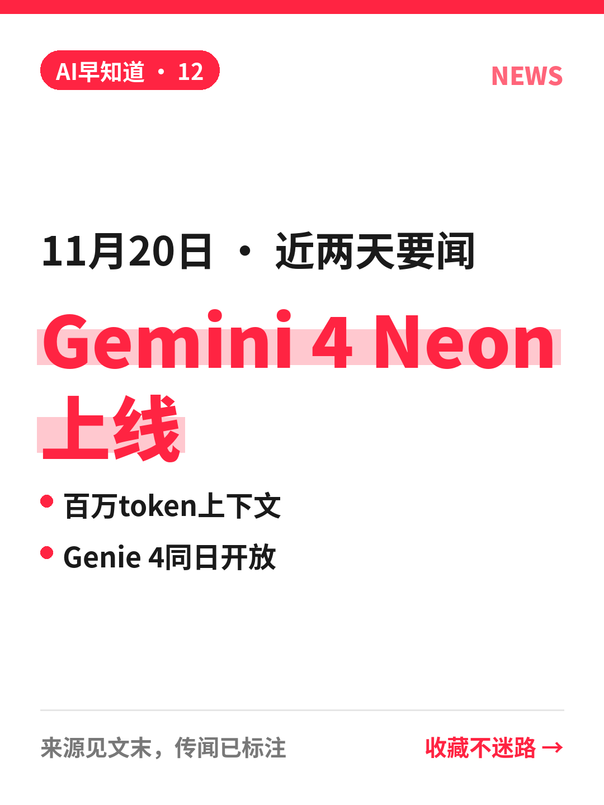

标题
☀️早报：Gemini 4 Neon上线，Genie 4开放
正文
早安☀️ 11月20日AI早报，只挑最要紧的3条（均来自近两天报道） 🔷 谷歌发Gemini 4 Neon 11月18日发布，主打复杂编程、科研和企业工作流，支持100万token上下文。API价格：输入3美元/百万token、输出15美元/百万token。谷歌称它在Artificial Analysis编程智能体指数排第一（特定评测条件，不代表所有任务）。 🌍 Genie 4正式上线 DeepMind的交互式世界模型，可用文字实时改天气、角色和剧情，自带实时音效。先向Google AI Ultra订阅用户开放，Pro用户可排候补。 💰 DeepSeek融资（据报道） 据虎嗅等媒体报道，工商信息显示DeepSeek第二轮融资新增31家合伙人，含腾讯、中国移动、宁德时代等。公司官方暂未公开细节，当传闻看就好。 💡 一句话：模型在往“能连续干活的Agent”卷，价格也在被拉低。 你最想先试哪一个？评论区聊聊👇
话题
#AI资讯 #Gemini #谷歌 #DeepSeek #人工智能 #AI早报
参考来源（不用发）
https://aistudio.google.com/docs/changelog https://www.ithome.com/1/029/144.htm https://www.v2code.ai/post/daily-2026-11-19 https://www.readaitime.com/digests/2026-11-19